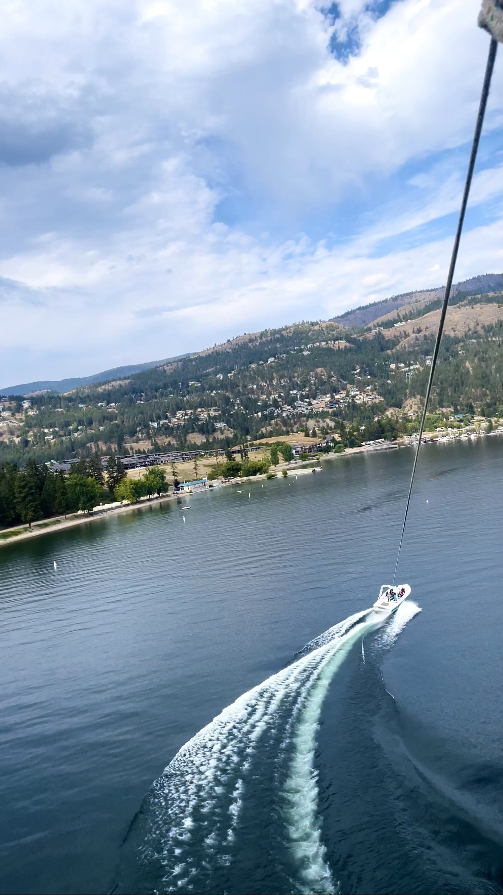
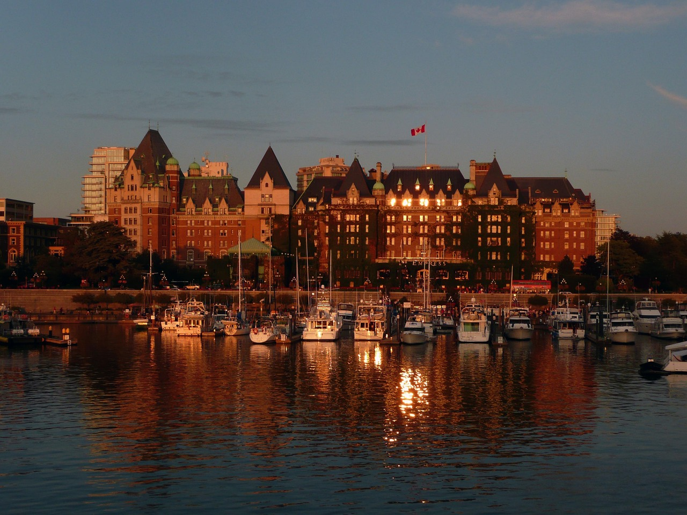
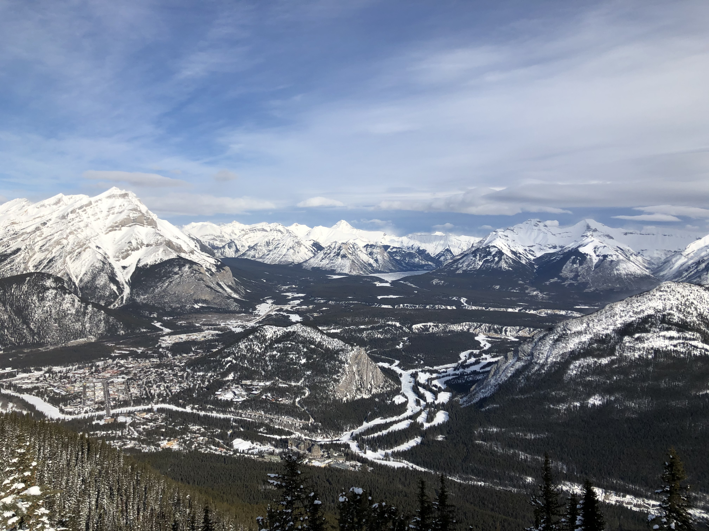

Kelowna, Canada
Last summer, we packed up the car and hit the road for a spontaneous weekend adventure to Kelowna, British Columbia. The drive itself was a treat, with winding mountain highways and breathtaking views that set the tone for the trip. Kelowna is known for its natural beauty and warm weather, and it didn’t disappoint. The first stop on our itinerary was cherry picking. We headed to a local orchard, where rows upon rows of trees hung heavy with ripe, juicy cherries. The air smelled sweet, and the sun was hot on our backs as we filled our baskets. It was a peaceful and grounding experience, surrounded by the soft rustle of leaves and the occasional bird song. Of course, we couldn’t resist sampling the fruit as we picked—it was deliciously fresh and perfectly sweet.
Next, we drove through Kelowna’s famed wine valley. The rolling hills, lined with perfectly manicured vineyards, stretched as far as the eye could see. We didn’t have time for a full winery tour, but even just driving through the area felt magical. The landscape was dotted with charming wineries, some of which had patios overlooking Okanagan Lake. It was hard to resist stopping at every scenic lookout for photos. The lake itself seemed to shimmer in the sunlight, creating a postcard-perfect backdrop wherever we went. We grabbed a quick bite from a local café and made a mental note to come back someday to explore the wineries in-depth.
The highlight of the trip was trying paragliding for the first time. I’ll admit, I was nervous as we drove up to the launch site high above the city, but the excitement quickly took over. Once I was harnessed in and we took off, all my fears melted away. The view was nothing short of spectacular. Soaring above the Okanagan Valley, with the vineyards, orchards, and glimmering lake below, was an experience I’ll never forget. It felt like pure freedom, gliding through the air with the wind in my face. By the time we landed, I couldn’t stop smiling—I was already dreaming about doing it again. Kelowna’s mix of adventure, natural beauty, and charm made it a trip to remember, and I can’t wait to go back and explore even more.
Learn more about visiting Kelowna.
Victoria, Canada
After spending a few days in bustling Vancouver, we decided to take a quick day trip to Victoria, British Columbia’s charming capital. The ferry ride across the Strait of Georgia was an adventure in itself, with stunning ocean views and the occasional glimpse of seals or birds along the way. Once we arrived, the city’s quaint, historical vibe immediately captured our hearts. Our first stop was the famous Butchart Gardens. Walking through the lush, colorful displays felt like stepping into a fairytale. Each section of the garden had its own unique character—from the tranquil Japanese Garden to the vibrant Sunken Garden. Everywhere we turned, there were vibrant flowers, meticulously designed landscapes, and peaceful spots to sit and take it all in.
After the gardens, we spent the afternoon exploring downtown Victoria. The Inner Harbour was alive with activity—street performers, small shops, and boats coming and going. We stopped for a quick bite at a cozy café overlooking the water and tried a locally-made pastry that didn’t disappoint. The Parliament Buildings and the Fairmont Empress Hotel stood tall, adding a regal air to the area. We didn’t go inside, but just walking by these iconic landmarks was a treat. We wandered along the streets, taking in the Victorian architecture and window-shopping at boutique stores.
Before catching the ferry back, we found a quiet spot along the waterfront to enjoy the sunset. The colors reflected off the water, and the peacefulness of the moment was the perfect way to end our short but sweet visit. Victoria may be small, but it’s packed with beauty, history, and charm. It was the perfect counterbalance to the energy of Vancouver, and I left wishing we’d had more time to explore its hidden gems.
Learn more about visiting Victoria.
Banff, Canada
Banff, nestled in the heart of the Canadian Rockies, is one of those places that feels like stepping into a postcard. We decided to visit in late March, and it was the perfect time. The town was still blanketed in snow, creating a magical winter wonderland. The streets were lively but not overly crowded, and the crisp mountain air had that refreshing chill that makes you feel alive. We started our day by strolling along Banff Avenue, where cozy shops and restaurants lined the streets. The vibe was warm and inviting, with a mix of tourists and locals enjoying everything from boutique shopping to steaming cups of coffee.
One of the highlights of our trip was riding the Banff Gondola. As we ascended Sulphur Mountain, the views grew more breathtaking with every passing second. The snow-covered peaks stretched endlessly in every direction, creating a stunning contrast against the clear blue sky. At the summit, we walked along the boardwalk and marveled at the panoramic views of the surrounding mountains and valleys. It was a surreal experience to be so high up, surrounded by pure white beauty as far as the eye could see. If you’re planning a trip, late winter or early spring is an ideal time—the snow adds a special charm, and the crisp weather makes the scenery even more spectacular.
Of course, no trip to Banff is complete without enjoying the local food. We ended the day at a cozy restaurant, indulging in a hearty meal while watching the last light fade over the mountains. Banff has a way of making you feel connected to nature while still offering all the comforts of a small, vibrant town. Whether you’re an outdoor enthusiast or just looking to take in some of Canada’s most iconic scenery, Banff has something for everyone. It’s a place that leaves you in awe and eager to return.
Learn more about visiting Banff.